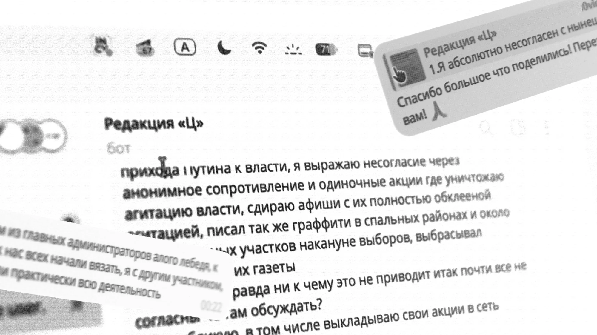
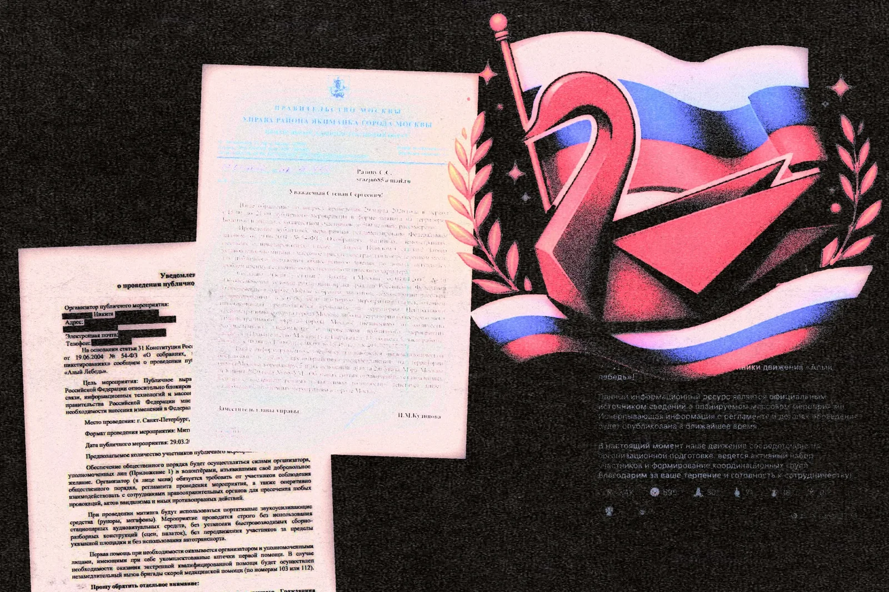
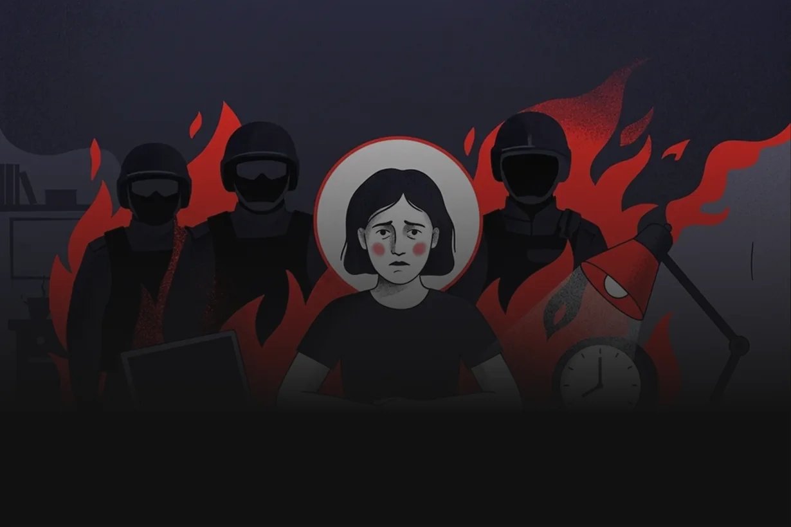
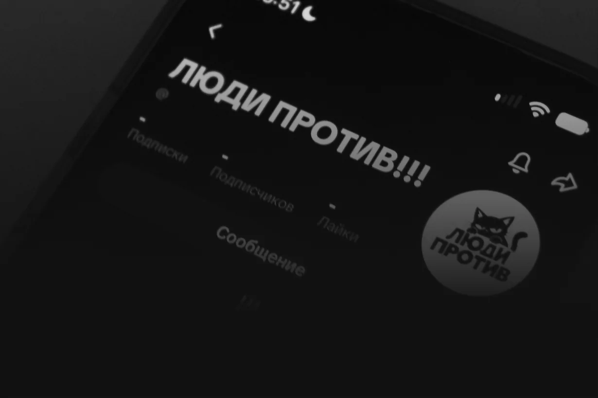
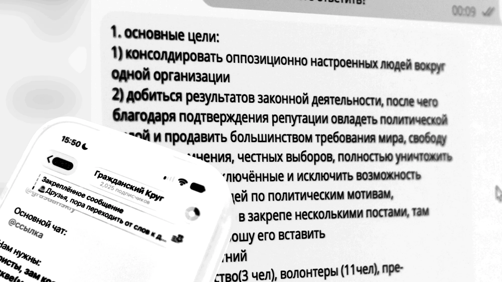
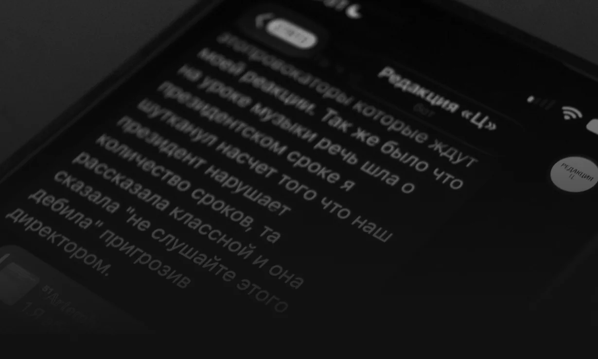
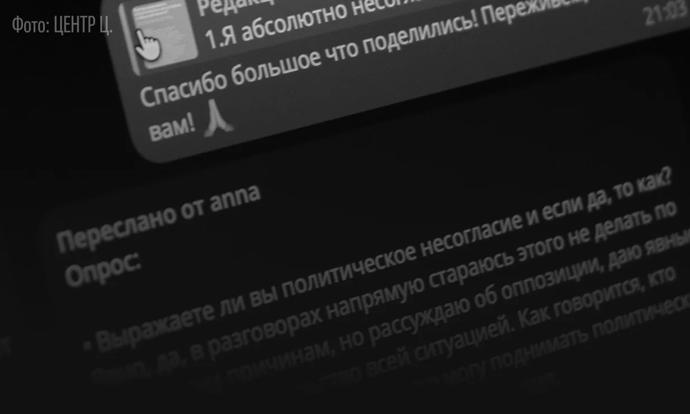

Как молодежь выражают несогласие с властью публично и в обычной жизни
Мы разобрали случаи, когда подростки пытались организовать митинги и другие публичные акции, а также собрали рассказы читателей о том, как они говорят о своем политическом несогласии среди друзей, знакомых и взрослых.
В репрессивной России для молодежи несогласие с властью начинается не с митинга и не с «опасных» заявлений в соцсетях. Сейчас чаще оно стало проявляться в разговорах с друзьями, спорах со взрослыми, публикациях в соцсетях или попытках открыто высказать свою позицию.
Но иногда подростки пытаются организовывать акции и привлекать внимание к темам, которые считают важными. Мы собрали несколько таких историй за последнее время и попросили читателей рассказать, как они сами выражают несогласие с нынешней властью: публично, среди друзей, в семье и в повседневной жизни.
Публичные кейсы

Фото: MeduzaОдин из самых заметных кейсов молодого политического активизма за последнее время случился весной 2026 года и связан с «Алым лебедем».
В марте, после блокировки Telegram, в TikTok и Telegram начали распространяться ролики и публикации с призывами выйти 29 марта — дата отсылает к статье 29 Конституции о свободе мысли и слова — на акции против блокировок и ограничений интернета. За ними стояло сообщество «Алый лебедь», которое заявляло своей целью защиту свободы слова, доступа к информации и права на мирные собрания. По данным «Вёрстки», в формировавшуюся команду вошли более 30 человек, среди которых были 14-, 15- и 17-летние подростки.
В Telegram набирали волонтеров и региональных организаторов, а потенциальных участников просили указывать имя, возраст, опыт и количество свободного времени. Движение быстро набрало аудиторию. К концу марта у его Telegram-канала было около 8,8 тысячи подписчиков, а в чате — около 7,6 тысячи участников. Организаторы подавали уведомления о проведении митингов в нескольких городах.
При этом вокруг проекта почти сразу возникли вопросы: личности организаторов и информация о руководстве менялись, внутри команды произошел конфликт, а журналисты и активисты допускали разные версии происхождения проекта, в том числе возможную провокацию. Подтверждений этой версии в опубликованных материалах не было. История «Алого лебедя» показывает довольно необычный для репрессивной России случай, когда подростки и совсем молодые люди попытались перейти от политических роликов в соцсетях к организации реальной публичной акции.
Еще до 29 марта участники и организаторы «Алого лебедя» столкнулись с давлением. По данным ОВД-Инфо и СМИ, одному из молодых организаторов звонили и писали с угрозами. Он утверждал, что под давлением опубликовал данные других участников движения, после чего вышел из проекта. Угрозы, по его словам, продолжили получать и оставшиеся организаторы. Кто именно их отправлял, достоверно не установлено.
Параллельно к участникам начала приходить полиция. 19-летнюю администраторку чата Софию Чепик забрали из дома на «профилактическую беседу», после которой ей выдали официальное предостережение о недопустимости нарушения закона. К другому участнику полиция приходила домой, а затем он сам явился в прокуратуру.
Само МВД перед 29 марта публично предупреждало о возможных задержаниях за участие в несогласованных акциях. После этого «Алый лебедь» призвал подписчиков не выходить на улицы в Москве и Петербурге.
В день акции по стране задержали около 25 человек. Среди задержанных в Москве были в том числе трое несовершеннолетних. Двое задержанных позднее сообщили ОВД-Инфо о насилии в отделах полиции.

Фото: ЦЕНТР Ц.(с использованием ИИ)
Через два дня после истории с «Алым лебедем» одна из тех, кому мы написали, решила попробовать организовать митинг против блокировок интернета уже в своем городе. До этого опыта в организации публичных акций у нее не было. Она подала уведомление о проведении митинга, но дальше события начали развиваться очень быстро. Вместо обычного отказа девушка столкнулась с полицией и административным делом. От подачи документов до суда прошло примерно полтора дня.
Как рассказывала сама девушка, сотрудники задавали вопросы об акции и ее организации. В итоге история, которая начиналась с попытки легально заявить небольшой митинг, закончилась разбирательством в суде. Этот случай хорошо показывает, с чем может столкнуться подросток или молодой человек, когда политическое несогласие выходит за пределы разговоров с друзьями и публикаций в интернете.
Даже попытка воспользоваться формальной процедурой и заранее уведомить власти об акции может довольно быстро привести к общению с силовиками и суду.

Фото: ЦЕНТР Ц.На следующий день после выборов в Госдуму в TikTok стали появляться видео от проекта «Люди Против» с призывом выходить и искать кошку по имени Свобода на Болотной площади. Под этим подразумевался выход на митинг.
Мы пообщались с администратором проекта. Он рассказал, что «Люди Против» планирует проводить мирные пикеты и что все будет проходить в рамках закона. При этом мы предупреждаем, что участие в несогласованных митингах может быть опасным, особенно в нынешних условиях.
В беседе с нами администратор также заявил, что проект не похож на «Алый лебедь», хотя сама концепция во многом схожа.
Как выяснила «Вёрстка», администратором проекта оказался 15-летний парень, который раньше не интересовался политикой, но после выборов, по его словам, понял, что происходит в стране. Позже проект взломал бывший участник «Алого лебедя». Свой поступок он объяснил желанием не ломать подростку судьбу.
Сейчас все официальные соцсети проекта «Люди Против» удалены.

Фото: ЦЕНТР Ц.Как мы узнали в беседе с создателем проекта, его цель заключается в том, чтобы консолидировать оппозиционно настроенных людей вокруг одной организации. В дальнейшем команда рассчитывает добиться результатов законными методами, заработать репутацию и получить политический вес, чтобы добиваться требований о мире, свободе выражения мнений, честных выборах и прекращении преследования людей по политическим мотивам.
На вопрос о том, как именно участники проекта собираются выражать свое несогласие, собеседник попросил привести цитату из публикации в канале:
«Мы хотим объединять людей вокруг конкретных проблем и вместе искать способы их решения через те механизмы, которые уже существуют в законодательстве».
Также из разговора мы узнали, что создатель проекта несовершеннолетний и ранее состоял в «Алом лебеде». По его словам, он был одним из главных администраторов проекта, а во время основных задержаний вместе с другими участниками продолжал заниматься его работой.
С последствиями участия в «Алом лебеде» он столкнулся в конце марта. По словам молодого человека, после выхода из подъезда рядом с ним остановился автомобиль, из которого вышли сотрудники спецподразделения. Они проверили документы и посадили его в машину. Сотрудник Центра «Э» начал задавать вопросы о политической активности и публикациях об Алексее Навальном.
Затем его доставили в отдел, где потребовали разблокировать телефон. Позже приехали еще двое сотрудников ФСБ, которые, как утверждает собеседник, проверяли его переписки и проводили допрос. После этого его попросили на камеру рассказать об организации, о том, как он туда попал и чем занимался.
В отношении молодого человека составили протокол по статье 19.3 КоАП РФ — о неповиновении законному распоряжению или требованию сотрудника полиции — и предупредили о возможном аресте на 15 суток. После суда его доставили в спецприемник.
Личные кейсы
Мы также спросили пользователей TikTok, как они выражают политическое несогласие в повседневной жизни: обсуждают ли политику с друзьями и родителями, пишут ли о ней в интернете и приходится ли им скрывать свои взгляды. Мы получили два развернутых ответа.

Фото: ЦЕНТР Ц.Первый собеседник рассказал, что выражает несогласие не только в интернете, но и через «одиночные» акции. По его словам, он срывает агитационные материалы, выбрасывает политические газеты и оставлял граффити, в том числе возле избирательных участков накануне выборов. Некоторые свои действия он публикует в сети.
«Я выражаю несогласие через анонимное сопротивление и одиночные акции. […] Публикую, в том числе выкладываю свои акции в сеть».
При этом открыто говорить о политике получается не всегда. Подросток рассказал, что ему приходилось фильтровать свои слова, чтобы, как он сам объясняет, не создавать себе лишних проблем.
Один из таких конфликтов произошел дома после комментария в TikTok. Подросток написал, что считает мир по нынешней линии фронта приемлемым вариантом. По его словам, мать после этого забрала у него гаджеты, а отец «п*зд*нул его».
С проблемами из-за своих высказываний он, по его словам, столкнулся и в школе. Во время разговора о президентских сроках на уроке музыки подросток пошутил о количестве сроков Путина. Дальше, как утверждает собеседник, об этом сообщили классному руководителю.
«Она сказала: “Не слушайте этого дебила”, пригрозив директором».

Фото: ЦЕНТР Ц.Второй собеседник описывает более осторожную и спокойную форму несогласия. Политические темы она обсуждает с друзьями, однако старается не говорить о своих взглядах напрямую в присутствии посторонних.
«В разговорах напрямую стараюсь этого не делать по очевидным причинам, но рассуждаю об оппозиции, даю явные намеки на недовольство всей ситуацией. Кто захочет, тот сразу поймет».
С друзьями о политике он говорит открыто. Дома ситуация другая: по словам подростка, родители просят его практически ничего не говорить о политике на людях.
В интернете для таких разговоров он использует отдельный анонимный аккаунт без фотографий и другой информации, по которой его можно узнать.
«Могу оставлять комментарии через анонимный аккаунт. Например, в TikTok, где нет роликов с моей личностью и информацией».
От более заметных способов выразить позицию он отказывается. Политическую музыку слушает в наушниках, а роликами и песнями иногда обменивается только с близкими друзьями.
На вопрос, приходилось ли скрывать свои взгляды из-за возможных последствий, он отвечает утвердительно:
«Никогда не скажу, что выступаю за нынешнюю власть. Лучше промолчу на сомнительный вопрос».
По словам собеседника, даже намеки на его позицию иногда приводили к спорам и конфликтам с людьми противоположных взглядов. При этом придумывать какие-то специальные способы протеста он не хочет.
Два ответа, конечно, не показывают отношение всех подростков. Но оба собеседника независимо друг от друга говорят об одной вещи: они разделяют то, что готовы сказать близким или написать анонимно в интернете, и то, что готовы произнести публично под своим именем.